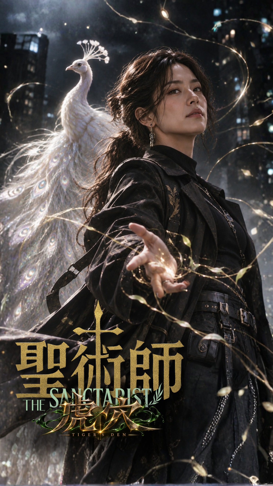

WHITE MAGIC ART STUDIO
角色形象專欄 ✦ 隱藏檔案
SANCTARIST: HOMECOMING SECRET ARCHIVES & EXTRA
EXTRA・虎穴預告

梁景瑜
LIANG JINGYU ｜ 木之靈獸使
✦ 點擊觀看續作《虎穴》EXTRA 檔案
WHITE MAGIC ART STUDIO
SANCTARIST: HOMECOMING SECRET ARCHIVES & EXTRA
